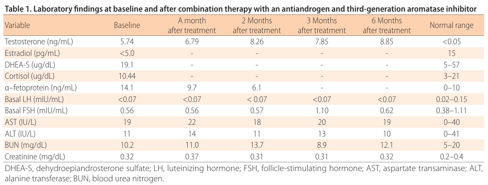

Familial male-limited precocious puberty (FMPP, testotoxicosis) is a rare form of gonadotropin-independent (peripheral) precocious puberty caused by heterozygous constitutively activating variants in LHCGR, the luteinizing hormone/choriogonadotropin receptor. The variant receptor signals through Gs/cAMP without ligand, so Leydig cells produce testosterone while LH and FSH remain at prepubertal or suppressed levels. Boys usually present between 1 and 4 years of age with virilization, rapid growth and advanced bone age; untreated, early epiphyseal fusion reduces adult height. Inheritance is autosomal dominant with expression limited to males, and de novo cases occur. Secondary central puberty commonly follows. Treatment combines an antiandrogen with an aromatase inhibitor (or a steroidogenesis inhibitor such as ketoconazole), with a GnRH agonist added once central puberty starts.
Ask a research question about Familial Male-limited Precocious Puberty. OpenScientist will conduct autonomous deep research using the Disorder Mechanisms Knowledge Base and PubMed literature (typically 10-30 minutes).
Do not include personal health information in your question. Questions and results are cached in your browser's local storage.
name: Familial Male-limited Precocious Puberty
creation_date: "2026-10-06T00:00:00Z"
description: >-
Familial male-limited precocious puberty (FMPP, testotoxicosis) is a rare
form of gonadotropin-independent (peripheral) precocious puberty caused by
heterozygous constitutively activating variants in LHCGR, the luteinizing
hormone/choriogonadotropin receptor. The variant receptor signals through
Gs/cAMP without ligand, so Leydig cells produce testosterone while LH and FSH
remain at prepubertal or suppressed levels. Boys usually present between 1 and
4 years of age with virilization, rapid growth and advanced bone age; untreated,
early epiphyseal fusion reduces adult height. Inheritance is autosomal dominant
with expression limited to males, and de novo cases occur. Secondary central
puberty commonly follows. Treatment combines an antiandrogen with an aromatase
inhibitor (or a steroidogenesis inhibitor such as ketoconazole), with a GnRH
agonist added once central puberty starts.
category: Mendelian
parents:
- Endocrine Disorder
synonyms:
- testotoxicosis
- familial testotoxicosis
- familial gonadotropin-independent male-limited sexual precocity
- FMPP
disease_term:
preferred_term: familial male-limited precocious puberty
term:
id: MONDO:0008303
label: familial male-limited precocious puberty
references:
- reference: PMID:7692306
title: "A constitutively activating mutation of the luteinizing hormone receptor in familial male precocious puberty."
- reference: PMID:38461807
title: "Familial male-limited precocious puberty due to an activating mutation of the LHCGR: a case report and literature review."
- reference: PMID:29144249
title: "Effect of Antiandrogen, Aromatase Inhibitor, and Gonadotropin-releasing Hormone Analog on Adult Height in Familial Male Precocious Puberty."
inheritance:
- name: Autosomal dominant inheritance
inheritance_term:
preferred_term: Autosomal dominant inheritance
term:
id: HP:0000006
label: Autosomal dominant inheritance
description: >-
Heterozygous activating LHCGR variants are transmitted as an autosomal
dominant trait, through affected fathers or unaffected carrier mothers.
De novo variants account for some sporadic cases.
evidence:
- reference: PMID:7692306
reference_title: "A constitutively activating mutation of the luteinizing hormone receptor in familial male precocious puberty."
supports: SUPPORT
evidence_source: HUMAN_CLINICAL
snippet: "Familial male precocious puberty (FMPP) is a gonadotropin-independent disorder that is inherited in an autosomal dominant, male-limited pattern."
explanation: >-
States the autosomal dominant, male-limited inheritance pattern in the
report that identified the causal LHCGR variant.
- reference: PMID:29144249
reference_title: "Effect of Antiandrogen, Aromatase Inhibitor, and Gonadotropin-releasing Hormone Analog on Adult Height in Familial Male Precocious Puberty."
supports: SUPPORT
evidence_source: HUMAN_CLINICAL
snippet: "Sixteen inherited the mutation from their affected, untreated father, nine from their mother, two had de novo mutations, and one had a mutation of unknown source"
explanation: >-
In a 28-patient NIH cohort, the variant was paternally inherited in 16,
maternally inherited in 9 and de novo in 2.
- name: Male-limited expression
inheritance_term:
preferred_term: Male-limited expression
term:
id: HP:0001475
label: Male-limited expression
description: >-
Female carriers of the same LHCGR variants are clinically normal. In the
testis, LH receptor activation alone is enough to drive Leydig cell
steroidogenesis. In the ovary, estradiol synthesis also needs FSH-driven
aromatase in granulosa cells, so receptor activation alone does not produce
precocious puberty in girls.
evidence:
- reference: PMID:38461807
reference_title: "Familial male-limited precocious puberty due to an activating mutation of the LHCGR: a case report and literature review."
supports: SUPPORT
evidence_source: HUMAN_CLINICAL
quote_role: BACKGROUND
snippet: "This activating mutation in LHCGR affects only males because activation of the LH receptor alone is sufficient to stimulate steroidogenesis in Leydig cells."
explanation: >-
Gives the sex-limited expression and its explanation, from the background
section of a case report with literature review.
- reference: PMID:38461807
reference_title: "Familial male-limited precocious puberty due to an activating mutation of the LHCGR: a case report and literature review."
supports: SUPPORT
evidence_source: HUMAN_CLINICAL
snippet: "Among the 7 unrelated patients who underwent parental genotyping, mutations were inherited from 3 affected fathers and 3 asymptomatic carrier mothers, and 1 patient had a de novo mutation"
explanation: >-
The literature review documents asymptomatic carrier mothers transmitting
the variant, showing non-expression in females.
prevalence:
- population: Worldwide
measure_type: UNKNOWN
prevalence_class: RARE
notes: >-
Described as rare; no population prevalence or incidence estimate was found
in the sources reviewed.
evidence:
- reference: PMID:26831561
reference_title: "Testotoxicosis: Report of Two Cases, One with a Novel Mutation in LHCGR Gene."
supports: SUPPORT
evidence_source: HUMAN_CLINICAL
quote_role: BACKGROUND
snippet: "familial male-limited precocious puberty is a rare, autosomal dominant form of gonadotropin-independent precocious puberty in males"
explanation: Characterizes the disorder as rare without a numeric estimate.
pathophysiology:
- name: Constitutive LHCGR Activation
description: >-
Heterozygous missense variants, mostly in the transmembrane helices encoded
by exon 11 (Asp578Gly is the classic variant), make the LH/choriogonadotropin
receptor signal in the absence of agonist.
role: Primary
biological_scale: MOLECULAR
genetic_context:
gene:
preferred_term: LHCGR
term:
id: hgnc:6585
label: LHCGR
functional_impact_category: GAIN_OF_FUNCTION
variant_origin: GERMLINE
zygosity: HETEROZYGOUS
description: >-
Activating missense variants causing agonist-independent receptor
signalling. Somatic activating variants confined to testicular tissue
cause a sporadic form and are not part of this entry.
genes:
- preferred_term: LHCGR
term:
id: hgnc:6585
label: LHCGR
molecular_functions:
- preferred_term: luteinizing hormone receptor activity
modifier: GAIN_OF_FUNCTION
term:
id: GO:0004964
label: luteinizing hormone receptor activity
cell_types:
- preferred_term: Leydig cell
term:
id: CL:0000178
label: Leydig cell
downstream:
- target: Ligand-Independent Leydig Cell cAMP Signaling
description: >-
The activated receptor couples to Gs and adenylyl cyclase without LH,
raising basal cAMP.
causal_link_type: DIRECT
evidence:
- reference: PMID:7692306
reference_title: "A constitutively activating mutation of the luteinizing hormone receptor in familial male precocious puberty."
supports: SUPPORT
evidence_source: HUMAN_CLINICAL
snippet: "A single A-->G base change that results in substitution of glycine for aspartate at position 578 in the sixth transmembrane helix of the LH receptor was found in affected individuals from eight different families."
explanation: >-
Identifies the recurrent heterozygous Asp578Gly LHCGR variant in eight
FMPP families.
- reference: PMID:26831561
reference_title: "Testotoxicosis: Report of Two Cases, One with a Novel Mutation in LHCGR Gene."
supports: SUPPORT
evidence_source: HUMAN_CLINICAL
quote_role: BACKGROUND
snippet: "Although the reported mutations in familial and sporadic cases had a genetic heterogeneity, they were usually sited in exon 11"
explanation: Places most reported activating variants in LHCGR exon 11.
- name: Ligand-Independent Leydig Cell cAMP Signaling
description: >-
Leydig cells carrying the variant receptor show increased cAMP production
with little or no LH, which drives steroidogenesis and Leydig cell
proliferation.
role: Intermediate
biological_scale: CELLULAR
biological_processes:
- preferred_term: adenylate cyclase-activating G protein-coupled receptor signaling pathway
modifier: GAIN_OF_FUNCTION
term:
id: GO:0007189
label: adenylate cyclase-activating G protein-coupled receptor signaling pathway
cell_types:
- preferred_term: Leydig cell
term:
id: CL:0000178
label: Leydig cell
downstream:
- target: Gonadotropin-Independent Testosterone Synthesis
description: cAMP signalling drives Leydig cell testosterone synthesis.
causal_link_type: DIRECT
- target: Premature Leydig Cell Proliferation
description: cAMP signalling drives early Leydig cell proliferation and differentiation.
causal_link_type: DIRECT
evidence:
- reference: PMID:7692306
reference_title: "A constitutively activating mutation of the luteinizing hormone receptor in familial male precocious puberty."
supports: SUPPORT
evidence_source: IN_VITRO
snippet: "COS-7 cells expressing the mutant LH receptor exhibited markedly increased cyclic AMP production in the absence of agonist, suggesting that autonomous Leydig cell activity in FMPP is caused by a constitutively activated LH receptor."
explanation: >-
Transfected cells expressing the Asp578Gly receptor show agonist-independent
cAMP production.
- reference: PMID:23861372
reference_title: "Precocious puberty and Leydig cell hyperplasia in male mice with a gain of function mutation in the LH receptor gene."
supports: SUPPORT
evidence_source: IN_VITRO
snippet: "In transfected cells, mouse D582G mLHR exhibited constitutive activity with a 23-fold increase in basal cAMP levels compared with the wild-type receptor."
explanation: >-
The mouse equivalent of the human Asp578Gly receptor raises basal cAMP
23-fold in transfected cells.
- name: Gonadotropin-Independent Testosterone Synthesis
description: >-
Leydig cells secrete testosterone at pubertal or adult levels while LH and
FSH are prepubertal or suppressed. The hypothalamic-pituitary axis responds
normally to the excess sex steroid by suppressing gonadotropins.
role: Intermediate
biological_scale: CELLULAR
biological_processes:
- preferred_term: testosterone biosynthetic process
modifier: INCREASED
term:
id: GO:0061370
label: testosterone biosynthetic process
cell_types:
- preferred_term: Leydig cell
term:
id: CL:0000178
label: Leydig cell
downstream:
- target: Increased serum testosterone level
causal_link_type: DIRECT
- target: Androgen-Driven Virilization
causal_link_type: DIRECT
- target: Peripheral Aromatization of Testosterone to Estradiol
causal_link_type: DIRECT
- target: Decreased circulating luteinizing hormone level
description: Sex-steroid negative feedback suppresses pituitary gonadotropin secretion.
causal_link_type: INDIRECT_KNOWN_INTERMEDIATES
- target: Decreased circulating follicle stimulating hormone concentration
description: Sex-steroid negative feedback suppresses pituitary gonadotropin secretion.
causal_link_type: INDIRECT_KNOWN_INTERMEDIATES
- target: Secondary Central Puberty Activation
description: >-
Prolonged sex-steroid exposure and advanced maturation are followed by
early activation of hypothalamic GnRH secretion.
causal_link_type: INDIRECT_UNKNOWN_INTERMEDIATES
evidence:
- reference: PMID:7692306
reference_title: "A constitutively activating mutation of the luteinizing hormone receptor in familial male precocious puberty."
supports: SUPPORT
evidence_source: HUMAN_CLINICAL
snippet: "Testosterone production and Leydig cell hyperplasia occur in the context of prepubertal levels of luteinizing hormone (LH)."
explanation: Testosterone is produced despite prepubertal LH.
- reference: PMID:38461807
reference_title: "Familial male-limited precocious puberty due to an activating mutation of the LHCGR: a case report and literature review."
supports: SUPPORT
evidence_source: HUMAN_CLINICAL
quote_role: BACKGROUND
snippet: "This results in excessive testosterone production by the Leydig cells despite low luteinizing hormone (LH) and follicular stimulating hormone (FSH) levels."
explanation: States gonadotropin-independent Leydig cell testosterone production.
- reference: PMID:3539979
reference_title: "Gonadotropin-independent precocious puberty (\"testotoxicosis\"): influence of maturational status on response to ketoconazole."
supports: SUPPORT
evidence_source: HUMAN_CLINICAL
snippet: "These data together with evidence of normal testosterone responses to hCG during ketoconazole therapy indicate that in testotoxicosis, pituitary and gonadal receptors are functionally intact, with appropriate negative feedback relationships."
explanation: >-
Shows the pituitary-gonadal feedback loop is intact, so gonadotropin
suppression is a feedback response to the autonomous testosterone.
- name: Androgen-Driven Virilization
description: >-
Testosterone acting through the androgen receptor produces penile
enlargement, pubic hair, acne, frequent erections, aggressive behaviour and
accelerated linear growth.
role: Downstream
biological_scale: ORGANISM
biological_processes:
- preferred_term: androgen receptor signaling pathway
modifier: INCREASED
term:
id: GO:0030521
label: androgen receptor signaling pathway
downstream:
- target: Precocious puberty in males
causal_link_type: DIRECT
- target: Premature pubarche
causal_link_type: DIRECT
- target: Penile enlargement
causal_link_type: DIRECT
- target: Acne
causal_link_type: DIRECT
- target: Aggressive behavior
causal_link_type: DIRECT
evidence:
- reference: PMID:40068940
reference_title: "The clinical characteristics of 10 cases and adult height of six cases of rare familial male-limited precocious puberty."
supports: SUPPORT
evidence_source: HUMAN_CLINICAL
snippet: "All patients initially presented with symptoms like penile enlargement, frequent erections, and rapid growth."
explanation: Presenting androgen-driven features in a ten-patient series.
- reference: PMID:2492636
reference_title: "Treatment of familial male precocious puberty with spironolactone and testolactone."
supports: SUPPORT
evidence_source: HUMAN_CLINICAL
snippet: "a combination of spironolactone and testolactone, given for at least six months, restored both the growth rate and the rate of bone maturation to normal prepubertal levels and controlled acne, spontaneous erections, and aggressive behavior"
explanation: >-
Androgen-receptor blockade combined with aromatase inhibition controlled
acne, erections and aggressive behaviour, tying these features to sex
steroid action.
- name: Peripheral Aromatization of Testosterone to Estradiol
description: >-
Excess testosterone is aromatized to estradiol. Estrogen action accelerates
bone maturation and epiphyseal fusion, which shortens the growth period.
role: Intermediate
biological_scale: ORGANISM
biological_processes:
- preferred_term: estrogen biosynthetic process
modifier: INCREASED
term:
id: GO:0006703
label: estrogen biosynthetic process
downstream:
- target: Increased serum estradiol
causal_link_type: DIRECT
- target: Accelerated skeletal maturation
causal_link_type: DIRECT
- target: Accelerated childhood linear growth
causal_link_type: DIRECT
description: >-
Estradiol formed from testosterone drives the childhood growth spurt
together with the skeletal advance.
evidence:
- reference: PMID:38461807
reference_title: "Familial male-limited precocious puberty due to an activating mutation of the LHCGR: a case report and literature review."
supports: SUPPORT
evidence_source: HUMAN_CLINICAL
quote_role: BACKGROUND
snippet: "Rapid growth and bone age advancement result from the conversion of androgens to estrogens by the enzyme aromatase."
explanation: >-
Attributes the rapid growth of FMPP to aromatization of androgens to
estrogens.
evidence:
- reference: PMID:38461807
reference_title: "Familial male-limited precocious puberty due to an activating mutation of the LHCGR: a case report and literature review."
supports: SUPPORT
evidence_source: HUMAN_CLINICAL
snippet: "The goals of treatment are to suppress pubertal progression by reducing the effects of testosterone and to increase final adult height by inhibiting the aromatization of testosterone to estrogen"
explanation: >-
Treatment targets aromatization to estrogen in order to protect adult
height, which identifies estrogen as the driver of skeletal advance.
- reference: PMID:2492636
reference_title: "Treatment of familial male precocious puberty with spironolactone and testolactone."
supports: SUPPORT
evidence_source: HUMAN_CLINICAL
snippet: "The combined therapy was associated with a significantly lower growth rate than testolactone alone (P less than 0.05) and a significantly lower rate of bone maturation than spironolactone alone (P less than 0.05)."
explanation: >-
Adding aromatase inhibition to an antiandrogen further slowed bone
maturation, supporting an estrogen contribution to skeletal advance.
- name: Premature Leydig Cell Proliferation
description: >-
Leydig cells proliferate and differentiate early, producing Leydig cell
hyperplasia that can be nodular.
role: Downstream
biological_scale: TISSUE
cell_types:
- preferred_term: Leydig cell
term:
id: CL:0000178
label: Leydig cell
locations:
- preferred_term: testis
term:
id: UBERON:0000473
label: testis
downstream:
- target: Leydig cell hyperplasia
causal_link_type: DIRECT
evidence:
- reference: PMID:36071555
reference_title: "Familial Male-limited Precocious Puberty (FMPP) and Testicular Germ Cell Tumors."
supports: SUPPORT
evidence_source: HUMAN_CLINICAL
quote_role: BACKGROUND
snippet: "As a result of the activated LHCGR status in FMPP, Leydig cell hyperplasia occurs at a young age"
explanation: Attributes early Leydig cell hyperplasia to receptor activation.
- reference: PMID:23861372
reference_title: "Precocious puberty and Leydig cell hyperplasia in male mice with a gain of function mutation in the LH receptor gene."
supports: SUPPORT
evidence_source: MODEL_ORGANISM
snippet: "We further demonstrate that the hyperplasia is due to premature proliferation and precocious differentiation of adult Leydig cells in the KiLHR(D582G) testis."
explanation: >-
In the knock-in mouse, the hyperplasia comes from premature proliferation
and differentiation of adult Leydig cells.
- name: Secondary Central Puberty Activation
description: >-
After a period of peripheral puberty, the hypothalamic GnRH pulse generator
activates early, LH and FSH rise, and pubertal progression escapes control
by antiandrogen and aromatase-inhibitor therapy until a GnRH agonist is
added.
role: Downstream
biological_scale: ORGANISM
downstream:
- target: Precocious puberty in males
causal_link_type: DIRECT
evidence:
- reference: PMID:40068940
reference_title: "The clinical characteristics of 10 cases and adult height of six cases of rare familial male-limited precocious puberty."
supports: SUPPORT
evidence_source: HUMAN_CLINICAL
snippet: "Secondary Central Precocious Puberty (CPP) developed between ages 5 and 6.5 years in all cases, necessitating additional GnRHa treatment."
explanation: All six treated boys developed secondary central puberty.
- reference: PMID:8421081
reference_title: "Treatment of familial male precocious puberty with spironolactone, testolactone, and deslorelin."
supports: SUPPORT
evidence_source: HUMAN_CLINICAL
snippet: "We conclude that the rise in gonadotropin levels during central activation of hypothalamic LHRH secretion in boys with familial male precocious puberty causes a partial escape from the combined effect of spironolactone and testolactone."
explanation: >-
Central activation of hypothalamic LHRH secretion follows and causes
escape from peripheral blockade.
phenotypes:
- name: Precocious puberty in males
category: Endocrine
description: >-
Gonadotropin-independent isosexual precocious puberty, usually starting
between 1 and 4 years of age, with penile enlargement, pubic hair and only
modest testicular enlargement.
phenotype_term:
preferred_term: Gonadotropin-independent precocious puberty in males
term:
id: HP:0008185
label: Precocious puberty in males
evidence:
- reference: PMID:7692306
reference_title: "A constitutively activating mutation of the luteinizing hormone receptor in familial male precocious puberty."
supports: SUPPORT
evidence_source: HUMAN_CLINICAL
snippet: "Affected males generally exhibit signs of puberty by age 4."
explanation: Typical age of onset of precocious puberty in affected boys.
- reference: PMID:38461807
reference_title: "Familial male-limited precocious puberty due to an activating mutation of the LHCGR: a case report and literature review."
supports: SUPPORT
evidence_source: HUMAN_CLINICAL
snippet: "A 16-month-old boy presented with signs of precocious puberty, including pubic hair, acne, and increased growth velocity."
explanation: Case presentation in infancy with pubertal signs.
- name: Increased serum testosterone level
category: Endocrine
description: Serum testosterone in the pubertal or adult range.
phenotype_term:
preferred_term: Increased serum testosterone level
term:
id: HP:0030088
label: Increased serum testosterone level
evidence:
- reference: PMID:38461807
reference_title: "Familial male-limited precocious puberty due to an activating mutation of the LHCGR: a case report and literature review."
supports: SUPPORT
evidence_source: HUMAN_CLINICAL
snippet: "Laboratory findings showed high serum testosterone (5.74 ng/mL"
explanation: High serum testosterone (5.74 ng/mL) in a 16-month-old with FMPP.
- name: Decreased circulating luteinizing hormone level
category: Endocrine
description: LH is prepubertal or suppressed despite high testosterone.
phenotype_term:
preferred_term: Decreased circulating luteinizing hormone level
term:
id: HP:0030344
label: Decreased circulating luteinizing hormone level
evidence:
- reference: PMID:29029242
reference_title: "Germ Cell Neoplasia in Situ and Preserved Fertility Despite Suppressed Gonadotropins in a Patient With Testotoxicosis."
supports: SUPPORT
evidence_source: HUMAN_CLINICAL
snippet: "From infancy throughout adulthood, elevated testosterone and estradiol, low inhibin B and anti-Müllerian hormone, and completely suppressed follicle-stimulating hormone and luteinizing hormone were noted."
explanation: LH was suppressed from infancy into adulthood in one patient followed for 25 years.
- name: Decreased circulating follicle stimulating hormone concentration
category: Endocrine
description: FSH is prepubertal or suppressed.
phenotype_term:
preferred_term: Decreased circulating follicle stimulating hormone concentration
term:
id: HP:0030341
label: Decreased circulating follicle stimulating hormone concentration
evidence:
- reference: PMID:29029242
reference_title: "Germ Cell Neoplasia in Situ and Preserved Fertility Despite Suppressed Gonadotropins in a Patient With Testotoxicosis."
supports: SUPPORT
evidence_source: HUMAN_CLINICAL
snippet: "From infancy throughout adulthood, elevated testosterone and estradiol, low inhibin B and anti-Müllerian hormone, and completely suppressed follicle-stimulating hormone and luteinizing hormone were noted."
explanation: FSH was suppressed from infancy into adulthood in the same patient.
- name: Increased serum estradiol
category: Endocrine
description: Estradiol is raised by aromatization of the excess testosterone.
phenotype_term:
preferred_term: Increased serum estradiol
term:
id: HP:0025134
label: Increased serum estradiol
evidence:
- reference: PMID:29029242
reference_title: "Germ Cell Neoplasia in Situ and Preserved Fertility Despite Suppressed Gonadotropins in a Patient With Testotoxicosis."
supports: SUPPORT
evidence_source: HUMAN_CLINICAL
snippet: "From infancy throughout adulthood, elevated testosterone and estradiol"
explanation: Estradiol was elevated alongside testosterone.
- name: Accelerated skeletal maturation
category: Skeletal
description: >-
Bone age is advanced well beyond chronological age at presentation and
progresses rapidly without treatment.
phenotype_term:
preferred_term: Accelerated skeletal maturation
term:
id: HP:0005616
label: Accelerated skeletal maturation
evidence:
- reference: PMID:38461807
reference_title: "Familial male-limited precocious puberty due to an activating mutation of the LHCGR: a case report and literature review."
supports: SUPPORT
evidence_source: HUMAN_CLINICAL
quote_role: BACKGROUND
snippet: "Without treatment, rapidly progressive precocious puberty and accelerated skeletal maturation result in compromised final adult height"
explanation: Accelerated skeletal maturation is a defining feature of untreated FMPP.
- reference: PMID:40068940
reference_title: "The clinical characteristics of 10 cases and adult height of six cases of rare familial male-limited precocious puberty."
supports: SUPPORT
evidence_source: HUMAN_CLINICAL
snippet: "Their median age at diagnosis was 4.67 years with bone age being 9 years."
explanation: Bone age about four years ahead of chronological age at diagnosis.
sequelae:
- target: Short stature
description: Early epiphyseal fusion shortens the growth period and reduces adult height.
evidence:
- reference: PMID:38461807
reference_title: "Familial male-limited precocious puberty due to an activating mutation of the LHCGR: a case report and literature review."
supports: SUPPORT
evidence_source: HUMAN_CLINICAL
quote_role: BACKGROUND
snippet: "Without treatment, rapidly progressive precocious puberty and accelerated skeletal maturation result in compromised final adult height"
explanation: Links skeletal advance to reduced adult height.
- name: Short stature
category: Skeletal
description: >-
Untreated men reach a reduced adult height after early tall stature in
childhood.
phenotype_term:
preferred_term: Short adult stature
term:
id: HP:0004322
label: Short stature
evidence:
- reference: PMID:38461807
reference_title: "Familial male-limited precocious puberty due to an activating mutation of the LHCGR: a case report and literature review."
supports: SUPPORT
evidence_source: HUMAN_CLINICAL
snippet: "The patient's grandfather and father had a history of precocious puberty and profound short stature."
explanation: Untreated affected men in a three-generation pedigree had short stature.
- reference: PMID:40068940
reference_title: "The clinical characteristics of 10 cases and adult height of six cases of rare familial male-limited precocious puberty."
supports: SUPPORT
evidence_source: HUMAN_CLINICAL
snippet: "Four patients were untreated with a median adult height of 162 cm."
explanation: Reduced adult height in untreated patients.
- name: Accelerated childhood linear growth
category: Growth
description: >-
Rapid linear growth from early childhood, so that height is well above the
mean for age at presentation, before skeletal advance curtails final
height.
phenotype_term:
preferred_term: Accelerated childhood linear growth
term:
id: HP:0000098
label: Tall stature
evidence:
- reference: PMID:40068940
reference_title: "The clinical characteristics of 10 cases and adult height of six cases of rare familial male-limited precocious puberty."
supports: SUPPORT
evidence_source: HUMAN_CLINICAL
snippet: "All patients initially presented with symptoms like penile enlargement, frequent erections, and rapid growth."
explanation: Rapid growth was a presenting feature in all ten patients of the series.
- reference: PMID:26831561
reference_title: "Testotoxicosis: Report of Two Cases, One with a Novel Mutation in LHCGR Gene."
supports: SUPPORT
evidence_source: HUMAN_CLINICAL
snippet: "At physical examination, his height was 96 cm (+5.38 standart deviation score (SDS)) and weight was 17 kg (+2.0 SDS)."
explanation: Height more than five standard deviations above the mean at 1.4 years.
- name: Premature pubarche
category: Endocrine
description: Pubic hair appears in infancy or early childhood under testosterone excess.
phenotype_term:
preferred_term: Premature pubarche
term:
id: HP:0012411
label: Premature pubarche
evidence:
- reference: PMID:38461807
reference_title: "Familial male-limited precocious puberty due to an activating mutation of the LHCGR: a case report and literature review."
supports: SUPPORT
evidence_source: HUMAN_CLINICAL
snippet: "A 16-month-old boy presented with signs of precocious puberty, including pubic hair, acne, and increased growth velocity."
explanation: Pubic hair at presentation in a 16-month-old boy with an activating LHCGR variant.
- reference: PMID:26831561
reference_title: "Testotoxicosis: Report of Two Cases, One with a Novel Mutation in LHCGR Gene."
supports: SUPPORT
evidence_source: HUMAN_CLINICAL
snippet: "Patient 2 was admitted at the age of 1.5 years with complaints of pubic hair development, penile enlargement and linear growth acceleration."
explanation: Pubic hair development at 1.5 years in a second affected boy.
- name: Penile enlargement
category: Genitourinary
description: >-
Stretched penile length rises above two standard deviations for age while
the testes stay comparatively small.
phenotype_term:
preferred_term: Penile enlargement
term:
id: HP:0000040
label: Long penis
evidence:
- reference: PMID:26831561
reference_title: "Testotoxicosis: Report of Two Cases, One with a Novel Mutation in LHCGR Gene."
supports: SUPPORT
evidence_source: HUMAN_CLINICAL
snippet: "Penile stretch length was 13 cm (>2 SDS); the left testicular volume was 3 mL and the right was 4 mL."
explanation: Stretched penile length above two standard deviations at 1.4 years.
- reference: PMID:38461807
reference_title: "Familial male-limited precocious puberty due to an activating mutation of the LHCGR: a case report and literature review."
supports: SUPPORT
evidence_source: HUMAN_CLINICAL
snippet: "The stretched penile length was 7 cm (>2 standard deviation score), and observed bone age was that of a 4-year-old boy."
explanation: Stretched penile length above two standard deviations at 16 months.
- name: Acne
category: Dermatological
description: Androgen-driven acne in early childhood.
phenotype_term:
preferred_term: Acne
term:
id: HP:0001061
label: Acne
evidence:
- reference: PMID:26831561
reference_title: "Testotoxicosis: Report of Two Cases, One with a Novel Mutation in LHCGR Gene."
supports: SUPPORT
evidence_source: HUMAN_CLINICAL
snippet: "A 1.4-year-old boy was admitted with complaints of pubic hair development, penile enlargement, linear growth acceleration, acne and increased aggressive behavior."
explanation: Acne at presentation in a toddler with an activating LHCGR variant.
- name: Aggressive behavior
category: Behavioral
description: Increased aggressiveness during the period of androgen excess.
phenotype_term:
preferred_term: Aggressive behavior
term:
id: HP:0000718
label: Aggressive behavior
evidence:
- reference: PMID:26831561
reference_title: "Testotoxicosis: Report of Two Cases, One with a Novel Mutation in LHCGR Gene."
supports: SUPPORT
evidence_source: HUMAN_CLINICAL
snippet: "A 1.4-year-old boy was admitted with complaints of pubic hair development, penile enlargement, linear growth acceleration, acne and increased aggressive behavior."
explanation: Aggressive behaviour at presentation.
- name: Leydig cell hyperplasia
category: Reproductive
description: Diffuse or nodular Leydig cell hyperplasia on testicular histology.
phenotype_term:
preferred_term: Leydig cell hyperplasia
term:
id: HP:0010791
label: Hyperplasia of the Leydig cells
evidence:
- reference: PMID:26831561
reference_title: "Testotoxicosis: Report of Two Cases, One with a Novel Mutation in LHCGR Gene."
supports: SUPPORT
evidence_source: HUMAN_CLINICAL
quote_role: BACKGROUND
snippet: "Nodular Leydig cell hyperplasia can be observed and seminiferous tubular development is usually sufficient to allow spermatogenesis"
explanation: Nodular Leydig cell hyperplasia is a recognized histological finding.
- reference: PMID:7692306
reference_title: "A constitutively activating mutation of the luteinizing hormone receptor in familial male precocious puberty."
supports: SUPPORT
evidence_source: HUMAN_CLINICAL
snippet: "Testosterone production and Leydig cell hyperplasia occur in the context of prepubertal levels of luteinizing hormone (LH)."
explanation: Leydig cell hyperplasia is part of the defining picture.
- name: Testicular germ cell tumor in adulthood
category: Neoplastic
description: >-
Testicular germ cell tumours, including seminoma, and germ cell neoplasia in
situ have been reported in young adult men with FMPP. The association rests
on case reports and small families; periodic testicular ultrasound from
mid-puberty has been suggested.
phenotype_term:
preferred_term: Testicular germ cell tumor
term:
id: HP:0010788
label: Testicular neoplasm
evidence:
- reference: PMID:36071555
reference_title: "Familial Male-limited Precocious Puberty (FMPP) and Testicular Germ Cell Tumors."
supports: SUPPORT
evidence_source: HUMAN_CLINICAL
snippet: "There is a strong suggestion that FMPP might increase the risk of development of testicular GCTs in early adulthood compared with the risk in the general population."
explanation: Two families plus a literature review suggest increased germ cell tumour risk.
- reference: PMID:9703386
reference_title: "Testicular seminoma in a patient with a constitutively activating mutation of the luteinizing hormone/chorionic gonadotropin receptor."
supports: SUPPORT
evidence_source: HUMAN_CLINICAL
snippet: "He represents the first case of a testicular germ cell tumor described in an FMPP patient"
explanation: First reported seminoma in an adult with a germline Asp578Gly variant.
- name: Leydig cell adenoma
category: Neoplastic
description: Benign Leydig cell adenomas have been found in boys and men with FMPP.
phenotype_term:
preferred_term: Leydig cell adenoma
term:
id: HP:0100618
label: Leydig cell neoplasia
evidence:
- reference: PMID:29029242
reference_title: "Germ Cell Neoplasia in Situ and Preserved Fertility Despite Suppressed Gonadotropins in a Patient With Testotoxicosis."
supports: SUPPORT
evidence_source: HUMAN_CLINICAL
snippet: "At 25 years of age, ultrasound revealed a testicular tumor, identified as a Leydig cell adenoma, but unexpectedly with GCNIS present in adjacent seminiferous tubules."
explanation: Leydig cell adenoma in an adult with a de novo Asp578Tyr variant.
genetic:
- name: LHCGR
gene_term:
preferred_term: LHCGR
term:
id: hgnc:6585
label: LHCGR
relationship_type: CAUSATIVE
variant_origin: GERMLINE
notes: >-
Heterozygous constitutively activating missense variants, most in exon 11
(Asp578Gly, Asp578Tyr, Thr577Ile, Ala568Val, Met398Thr and others).
Loss-of-function LHCGR variants cause the opposite phenotype, Leydig cell
hypoplasia. Somatic activating variants found only in testicular tissue
(for example Asp578His) cause sporadic testotoxicosis or Leydig cell tumours
and are outside this entry. No ClinGen gene-disease validity record was
found for this pair.
evidence:
- reference: PMID:7692306
reference_title: "A constitutively activating mutation of the luteinizing hormone receptor in familial male precocious puberty."
supports: SUPPORT
evidence_source: HUMAN_CLINICAL
snippet: "A single A-->G base change that results in substitution of glycine for aspartate at position 578 in the sixth transmembrane helix of the LH receptor was found in affected individuals from eight different families."
explanation: Original identification of the causal LHCGR variant.
- reference: PMID:30711030
reference_title: "Diseases caused by mutations in luteinizing hormone/chorionic gonadotropin receptor."
supports: SUPPORT
evidence_source: HUMAN_CLINICAL
quote_role: REVIEW_SYNTHESIS
snippet: "Familial male-limited precocious puberty, Leydig cell hypoplasia, and empty follicle syndrome are caused by LHCGR mutations."
explanation: Review naming FMPP among the LHCGR disorders.
diagnosis:
- name: LHCGR genetic testing
description: >-
Peripheral precocious puberty in a boy with high testosterone, prepubertal
or suppressed gonadotropins and only modest testicular enlargement is
confirmed by finding a heterozygous activating LHCGR variant in blood DNA.
If none is found, testicular tissue can be tested for a somatic variant.
diagnosis_term:
preferred_term: LHCGR gene sequencing
term:
id: NCIT:C15709
label: Genetic Testing
evidence:
- reference: PMID:9703386
reference_title: "Testicular seminoma in a patient with a constitutively activating mutation of the luteinizing hormone/chorionic gonadotropin receptor."
supports: SUPPORT
evidence_source: HUMAN_CLINICAL
snippet: "this diagnosis was confirmed by molecular genetic analysis that demonstrated the presence of a heterozygous constitutive activating mutation of the luteinizing hormone/chorionic gonadotropin receptor"
explanation: Molecular confirmation of a clinical FMPP diagnosis.
- reference: PMID:31394950
reference_title: "Testotoxicosis without Testicular Mass: Revealed by Peripheral Precocious Puberty and Confirmed by Somatic LHCGR Gene Mutation."
supports: SUPPORT
evidence_source: HUMAN_CLINICAL
snippet: "This observation underlines the need to look for a somatic LHCGR gene mutation from the testicular biopsies of all boys with testotoxicosis with no constitutive LHCGR gene mutation identified from blood DNA"
explanation: Supports testing testicular tissue when blood testing is negative.
treatments:
- name: Antiandrogen plus Aromatase Inhibitor
description: >-
An androgen receptor blocker (bicalutamide or spironolactone) combined with
an aromatase inhibitor (anastrozole, letrozole or the older testolactone)
slows growth, bone maturation and virilization. Neither drug class alone is
sufficient.
therapeutic_modality: SMALL_MOLECULE
treatment_term:
preferred_term: Pharmacotherapy
term:
id: NCIT:C15986
label: Pharmacotherapy
therapeutic_agent:
- preferred_term: bicalutamide
term:
id: CHEBI:3090
label: bicalutamide
- preferred_term: spironolactone
term:
id: CHEBI:9241
label: spironolactone
- preferred_term: anastrozole
term:
id: CHEBI:2704
label: anastrozole
- preferred_term: letrozole
term:
id: CHEBI:6413
label: letrozole
- preferred_term: testolactone
term:
id: CHEBI:9460
label: testolactone
target_mechanisms:
- target: Androgen-Driven Virilization
treatment_effect: INHIBITS
description: The antiandrogen blocks androgen receptor action.
- target: Peripheral Aromatization of Testosterone to Estradiol
treatment_effect: INHIBITS
description: The aromatase inhibitor blocks conversion of testosterone to estradiol.
evidence:
- reference: PMID:21158211
reference_title: "Bicalutamide plus anastrozole for the treatment of gonadotropin-independent precocious puberty in boys with testotoxicosis: a phase II, open-label pilot study (BATT)."
supports: SUPPORT
evidence_source: HUMAN_CLINICAL
snippet: "The bone age/chronological age ratio was reduced from 2.1 (+/- 0.6) at baseline to 1.0 (+/- 0.4) (p = 0.00013)."
explanation: Phase II trial in 14 boys; bone maturation normalized over one year.
- reference: PMID:2492636
reference_title: "Treatment of familial male precocious puberty with spironolactone and testolactone."
supports: SUPPORT
evidence_source: HUMAN_CLINICAL
snippet: "Neither spironolactone nor testolactone, given alone, was satisfactory as a treatment for this condition."
explanation: Monotherapy with either class was insufficient.
- reference: PMID:29144249
reference_title: "Effect of Antiandrogen, Aromatase Inhibitor, and Gonadotropin-releasing Hormone Analog on Adult Height in Familial Male Precocious Puberty."
supports: SUPPORT
evidence_source: HUMAN_CLINICAL
snippet: "Long-term treatment with antiandrogen, aromatase inhibitor, and GnRHa in boys with FMPP results in AH modestly below sex-adjusted midparental height and within the range for adult males in the general population."
explanation: Long-term combined treatment gave adult height within the normal male range in 28 boys.
- reference: PMID:26831561
reference_title: "Testotoxicosis: Report of Two Cases, One with a Novel Mutation in LHCGR Gene."
supports: REFUTE
evidence_source: HUMAN_CLINICAL
snippet: "Combination of bicalutamide+anastrozole was ineffective in slowing pubertal progression and bone age."
explanation: Two patients in whom bicalutamide plus anastrozole failed; response is not universal.
- name: Ketoconazole
description: >-
Ketoconazole inhibits adrenal and testicular steroidogenesis and lowers
testosterone. It is an alternative to the antiandrogen plus aromatase
inhibitor regimen. Escape can occur once central puberty begins.
therapeutic_modality: SMALL_MOLECULE
treatment_term:
preferred_term: Pharmacotherapy
term:
id: NCIT:C15986
label: Pharmacotherapy
therapeutic_agent:
- preferred_term: ketoconazole
term:
id: CHEBI:47519
label: ketoconazole
target_mechanisms:
- target: Gonadotropin-Independent Testosterone Synthesis
treatment_effect: INHIBITS
description: Inhibits C17-20 lyase and so lowers testosterone production.
evidence:
- reference: PMID:3539979
reference_title: "Gonadotropin-independent precocious puberty (\"testotoxicosis\"): influence of maturational status on response to ketoconazole."
supports: SUPPORT
evidence_source: HUMAN_CLINICAL
snippet: "Serum testosterone levels fell significantly within 24 h in all three patients, with reciprocal changes in serum 17-hydroxyprogesterone, consistent with inhibition of C17-20 lyase activity."
explanation: Ketoconazole rapidly lowered testosterone by blocking C17-20 lyase.
- reference: PMID:9362394
reference_title: "Long-term outcome of male-limited gonadotropin-independent precocious puberty."
supports: SUPPORT
evidence_source: HUMAN_CLINICAL
snippet: "ketoconazole was effective in reducing testosterone secretion, but its real effect on final height cannot be determined"
explanation: Effective on testosterone, with uncertain effect on adult height.
- name: GnRH Agonist for Secondary Central Puberty
description: >-
A GnRH agonist is added when secondary central puberty develops, restoring
control of growth and bone maturation.
therapeutic_modality: PEPTIDE
treatment_term:
preferred_term: Pharmacotherapy
term:
id: NCIT:C15986
label: Pharmacotherapy
therapeutic_agent:
- preferred_term: deslorelin
term:
id: CHEBI:177570
label: Deslorelin
- preferred_term: triptorelin
term:
id: CHEBI:63633
label: triptorelin
target_mechanisms:
- target: Secondary Central Puberty Activation
treatment_effect: INHIBITS
description: Suppresses pituitary gonadotropin secretion once central puberty starts.
evidence:
- reference: PMID:8421081
reference_title: "Treatment of familial male precocious puberty with spironolactone, testolactone, and deslorelin."
supports: SUPPORT
evidence_source: HUMAN_CLINICAL
snippet: "Addition of the LHRH agonist deslorelin (4 micrograms/kg.day, sc) to the combined therapy decreased peak LH, plasma testosterone, bone maturation rate, and growth velocity (P < 0.05) over the next year."
explanation: Adding deslorelin restored control after central puberty began.
- reference: PMID:9920079
reference_title: "Six-year results of spironolactone and testolactone treatment of familial male-limited precocious puberty with addition of deslorelin after central puberty onset."
supports: SUPPORT
evidence_source: HUMAN_CLINICAL
snippet: "We conclude that long term treatment with spironolactone, testolactone, and, after central puberty, deslorelin normalizes the growth rate and bone maturation and improves the predicted height in boys with familial male-limited precocious puberty."
explanation: Six-year outcomes of the three-drug sequence.
- reference: PMID:35909557
reference_title: "Long-Term Treatment With Letrozole in a Boy With Familial Male-Limited Precocious Puberty."
supports: SUPPORT
evidence_source: HUMAN_CLINICAL
snippet: "Triptorelin was added at age 4.7 years based on both the evidence of central puberty and his growth velocity according to BA."
explanation: Triptorelin used as the GnRH agonist after central puberty onset.
clinical_trials:
- name: NCT00094328
phase: PHASE_II
status: COMPLETED
description: >-
Open-label, non-comparative, multi-centre trial (BATT) of bicalutamide
combined with anastrozole once daily for 12 months in boys with
testotoxicosis; 14 boys enrolled.
target_phenotypes:
- preferred_term: Gonadotropin-independent precocious puberty in males
term:
id: HP:0008185
label: Precocious puberty in males
evidence:
- reference: clinicaltrials:NCT00094328
reference_title: "An Open-label, Non-comparative, Multi-centre Study to Assess the Efficacy and Safety of Bicalutamide When Used in Combination With Anastrozole for the Treatment of Gonadotropin-independent Precocious Puberty in Boys With Testotoxicosis"
supports: SUPPORT
evidence_source: HUMAN_CLINICAL
snippet: "The primary objective of this study is to investigate whether bicalutamide given in combination with anastrozole once daily for 12 months is effective in treating testotoxicosis in boys."
explanation: >-
Registry record of the prospective trial of the antiandrogen plus
aromatase inhibitor combination in this disease.
animal_models:
- name: KiLHR D582G knock-in mouse
species: Mouse
genotype: Lhcgr D582G knock-in (equivalent of human LHCGR Asp578Gly)
publication: PMID:23861372
description: >-
Knock-in mouse carrying the mouse equivalent of the commonest human FMPP
variant. Males reproduce the human phenotype. Females are infertile with
ovarian cysts, unlike human female carriers, who are unaffected.
evidence:
- reference: PMID:23861372
reference_title: "Precocious puberty and Leydig cell hyperplasia in male mice with a gain of function mutation in the LH receptor gene."
supports: SUPPORT
evidence_source: MODEL_ORGANISM
snippet: "To generate a mouse model for the human disease, we have introduced an aspartic acid to glycine mutation in amino acid residue 582 (D582G) of the mouse LHR gene corresponding to the most common D578G mutation found in boys with familial male-limited precocious puberty (FMPP)."
explanation: Describes how the model was made and its human equivalent.
modeled_mechanisms:
- target: Gonadotropin-Independent Testosterone Synthesis
relationship: RECAPITULATES
fidelity: HIGH
description: Males show precocious puberty with raised testosterone from the first week of life.
evidence:
- reference: PMID:23861372
reference_title: "Precocious puberty and Leydig cell hyperplasia in male mice with a gain of function mutation in the LH receptor gene."
supports: SUPPORT
evidence_source: MODEL_ORGANISM
snippet: "the knock-in mice with the mutated receptor (KiLHR(D582G)) exhibited precocious puberty with elevated testosterone levels as early as 7 days of age and through adulthood"
explanation: The male mouse reproduces gonadotropin-independent testosterone excess.
- target: Premature Leydig Cell Proliferation
relationship: RECAPITULATES
fidelity: HIGH
description: Leydig cell hyperplasia at all ages, from premature proliferation of adult Leydig cells.
limitations: >-
Hyperplasia concentrated at the periphery of the testis is reported in the
mouse but has not been described in patients.
evidence:
- reference: PMID:23861372
reference_title: "Precocious puberty and Leydig cell hyperplasia in male mice with a gain of function mutation in the LH receptor gene."
supports: SUPPORT
evidence_source: MODEL_ORGANISM
snippet: "A novel finding from our studies, not previously reported in the FMPP cases, is that extensive hyperplasia is commonly found around the periphery of the testis."
explanation: Supports the model for the node and records the one feature not seen in patients.
discussions:
- discussion_id: fmpp_female_carrier_mouse_mismatch
prompt: >-
Why does the same activating LH receptor variant leave women unaffected but
make female mice infertile with ovarian cysts and granulosa cell tumours?
kind: HUMAN_MODEL_MISMATCH
status: OPEN
attaches_to:
- inheritance#Male-limited expression
- animal_models#Mouse
rationale: >-
Male-limited expression in humans is explained by the need for FSH-driven
granulosa cell aromatase in the ovary. The knock-in female mouse does not
follow this pattern, which points to species differences in ovarian LH
receptor expression and regulation. Female mouse data therefore cannot be
used to predict the reproductive health of human female carriers.
evidence:
- reference: PMID:26040673
reference_title: "Infertility in Female Mice with a Gain-of-Function Mutation in the Luteinizing Hormone Receptor Is Due to Irregular Estrous Cyclicity, Anovulation, Hormonal Alterations, and Polycystic Ovaries."
supports: SUPPORT
evidence_source: MODEL_ORGANISM
snippet: "These studies demonstrate that activating LHCGR mutations do not produce the same phenotype in female mice as in humans and clearly illustrate species differences in the expression and regulation of LHCGR in the ovary, but not in the testis."
explanation: The model's own authors report the female human-mouse mismatch.
Deep research results are used as seeds for research; they do not undergo the same validation as the main records and may contain errors. How we use deep research.
Review round 1: add growth, pubarche and penile phenotypes, BATT trial, falcon report · 2026-10-09T02:51:37Z · View source
Addressed the review on PR 13618. Added three presenting phenotypes with exact snippets from PMID:40068940, PMID:26831561 and PMID:38461807: accelerated childhood linear growth (HP:0000098 Tall stature, height +5.38 SDS at 1.4 years), premature pubarche (HP:0012411) and penile enlargement (HP:0000040 Long penis, stretched length above 2 SDS). Pubarche and penile enlargement are wired from Androgen-Driven Virilization; linear growth is wired from Peripheral Aromatization of Testosterone to Estradiol, because the cited source attributes the rapid growth to aromatization of androgens to estrogens. Ran a falcon deep-research report (preflight-dr PASS, 11/11 references verified) and added the BATT trial NCT00094328 it surfaced as a clinical_trials record. The report's other leads (Leschek 2017 adult height series, mouse female-carrier mismatch, unknown tumour risk) were already covered by the entry.
Question: You are an expert researcher providing comprehensive, well-cited information.
Provide detailed information focusing on: 1. Key concepts and definitions with current understanding 2. Recent developments and latest research (prioritize 2023-2024 sources) 3. Current applications and real-world implementations 4. Expert opinions and analysis from authoritative sources 5. Relevant statistics and data from recent studies
Format as a comprehensive research report with proper citations. Include URLs and publication dates where available. Always prioritize recent, authoritative sources and provide specific citations for all major claims.
Please provide a comprehensive research report on Familial Male-limited Precocious Puberty covering all of the disease characteristics listed below. This report will be used to populate a disease knowledge base entry. Be thorough and cite primary literature (PMID preferred) for all claims.
For each section, suggested databases/resources are listed. These are the first places you should search for information on each topic.
Search first: OMIM, Orphanet, ICD-10/ICD-11, MeSH, PubMed
Search first: PubMed, Cochrane Library, UpToDate, clinical guidelines, ClinVar, ClinGen, GWAS Catalog, PheGenI, CTD, CDC, WHO, epidemiological databases
Search first: PubMed, Cochrane Library, clinical trial databases, GWAS Catalog, gnomAD, WHO, CDC, nutrition databases
Search first: CTD, PubMed, PheGenI, GxE databases
Search first: HPO (Human Phenotype Ontology), OMIM, Orphanet, PubMed, clinicaltrials.gov, MedDRA, SNOMED CT, DECIPHER, LOINC
For each phenotype, provide: - Phenotype type: symptoms, clinical signs, physical manifestations, behavioral changes, or laboratory abnormalities
For symptoms/signs: HPO, OMIM, Orphanet, PubMed For behavioral changes: HPO, DSM, RDoC (Research Domain Criteria), PubMed For laboratory abnormalities: LOINC, SNOMED CT, LabTests Online, PubMed - Phenotype characteristics: Search first: OMIM, Orphanet, HPO, PubMed - Age of symptom onset (neonatal, childhood, adult-onset, late-onset) - Symptom severity (mild, moderate, severe, variable) - Symptom progression (stable, progressive, episodic, fluctuating) - Frequency among affected individuals (percentage or qualitative) - Quality of life impact: Effects on daily functioning and well-being (per-phenotype when possible) Search first: EQ-5D database, SF-36, WHO QOL databases, PubMed - Suggest HPO (Human Phenotype Ontology) terms for each phenotype
Search first: OMIM, ClinVar, HGMD, Ensembl, NCBI Gene
Search first: ENCODE, Roadmap Epigenomics, MethBase, DiseaseMeth
Search first: DECIPHER, ClinVar, ECARUCA, UCSC Genome Browser
Search first: CTD (Comparative Toxicogenomics Database), TOXNET, PubMed, EPA databases
Search first: CDC databases, WHO, PubMed, NHANES
Search first: NCBI Taxonomy, ViPR, BV-BRC, MicrobeDB, GIDEON
Present this section as an ordered causal chain first, then the detail below. Open with a numbered sequence of mechanistic steps running from the initiating lesion (mutation, exposure, infection) to the clinical manifestation, one step per line, each naming what it causes next. State the causal verb explicitly ("leads to", "results in") and say where a step is inferred rather than demonstrated. Where the mechanism branches, show the branch. The categories below are a checklist of what to cover within those steps, not the organizing structure — a step may draw on several of them, and a category may contribute to several steps.
Search first: KEGG, Reactome, WikiPathways, PathBank, BioCyc
Search first: Gene Ontology (GO), Reactome, KEGG, PubMed
Search first: UniProt, PDB (Protein Data Bank), InterPro, Pfam, AlphaFold
Search first: KEGG, BioCyc, HMDB (Human Metabolome Database), BRENDA
Search first: ImmPort, Immunome Database, IEDB, Gene Ontology
Search first: PubMed, Gene Ontology, Reactome
Search first: BRENDA, UniProt, KEGG, OMIM, PubMed
Search first: ENCODE, Roadmap Epigenomics, MethBase, DiseaseMeth
For each mechanism, describe: - The causal chain from initial trigger to clinical manifestation - Which mechanisms are upstream vs downstream - What cell types and biological processes are involved - Suggest GO terms for biological processes and CL terms for cell types
Search first: Uberon, FMA (Foundational Model of Anatomy), OMIM, HPO, ICD-11, MeSH, SNOMED CT
Search first: Uberon, Human Protein Atlas, Cell Ontology, Human Cell Atlas, CellMarker, PanglaoDB
Search first: Gene Ontology (Cellular Component), UniProt, Human Protein Atlas
Search first: OMIM, Orphanet, HPO, PubMed
Search first: Disease registries, longitudinal cohort databases, natural history studies, PubMed, Orphanet, OMIM
Search first: Orphanet, CDC, WHO, GBD (Global Burden of Disease), national registries, SEER, disease registries
Search first: GTR (Genetic Testing Registry), GeneReviews, ClinGen
For each treatment, suggest NCIT (NCI Thesaurus) clinical-intervention terms where applicable.
Search first: CDC vaccine schedules, WHO immunization, FDA vaccine database
Search first: CDC, WHO, behavioral intervention databases, Cochrane Library
Search first: NSGC resources, ACMG guidelines, GeneReviews
Search first: Clinical guidelines, FDA approvals, PubMed
Search first: NCBI Taxonomy
Search first: VBO (Vertebrate Breed Ontology)
Search first: NCBI Gene
Structure your response as a comprehensive narrative organized by the sections above. For each section, provide: - Factual content with specific details (numbers, percentages, gene names, variant nomenclature) - Ontology term suggestions (HPO, GO, CL, UBERON, CHEBI, NCIT, MONDO) where applicable - Evidence citations with PMIDs - Direct quotes from abstracts to support key claims - Clear indication when information is not available or not applicable for this disease
This report will be used to populate a disease knowledge base entry with: - Pathophysiology descriptions with causal chains - Gene/protein annotations (HGNC, GO terms) - Phenotype associations (HP terms) with frequencies - Cell type involvement (CL terms) - Anatomical locations (UBERON terms) - Chemical entities (CHEBI terms) - Treatment annotations (NCIT terms) - Evidence items with PMIDs and exact abstract quotes - Epidemiology, prognosis, diagnostic, and prevention information - Animal model descriptions with phenotype recapitulation details
Scope and evidence standard. Familial male-limited precocious puberty (FMPP), or testotoxicosis, is a rare Mendelian cause of gonadotropin-independent (“peripheral”) precocious puberty. This report distinguishes observations in affected people from receptor experiments, animal models, reviews, and a trial registry. Frequencies from case reports are not population frequencies. The retrieved primary articles did not reliably provide PMIDs; DOI links are supplied instead of guessed PMIDs. Ontology labels below are mapping suggestions, not verified cross-references, except where an identifier is explicitly supported. (ha2024familialmalelimitedprecocious pages 1-2, leschek2017effectofantiandrogen pages 1-2, mcgee2013precociouspubertyand pages 1-2)
FMPP results from constitutive activation of the luteinizing hormone/choriogonadotropin receptor in testicular Leydig cells. Testosterone production begins prematurely despite prepubertal pituitary gonadotropin activity, producing early virilization, accelerated growth and skeletal maturation, and potentially short adult stature. It is genetically autosomal dominant but clinically predominantly male-limited. The verified disease identifiers are MONDO:0008303 and OMIM #176410; a trial-record terminology mapping gives MeSH C536961, “Familial Testotoxicosis,” and the broader heading D011629, “Puberty, Precocious.” The 2024 case report gives LHCGR as OMIM 152790. No specific Orphanet, ICD-10, or ICD-11 disease code was verified in the retrieved evidence; a generic precocious-puberty code should not be presented as FMPP-specific. Synonyms include familial testotoxicosis, familial male precocious puberty, and male-limited gonadotropin-independent precocious puberty*. (OpenTargets Search: familial male-limited precocious puberty-LHCGR, ha2024familialmalelimitedprecocious pages 1-2, ha2024familialmalelimitedprecocious pages 2-4, NCT00094328 chunk 2, yuan2022longtermtreatmentwith pages 1-2)
Data provenance: The measurements below come from published, consented individual cases or an aggregated 28-boy clinical follow-up, not an accessible patient-level EHR database. MONDO/Open Targets and the clinical-trial record are aggregated disease/registry resources. (ha2024familialmalelimitedprecocious pages 1-2, leschek2017effectofantiandrogen pages 1-2, NCT00094328 chunk 1, OpenTargets Search: familial male-limited precocious puberty-LHCGR)
The established initiating cause is a heterozygous activating LHCGR variant, inherited or arising de novo. Affected family history raises suspicion but is not required: among seven unrelated cases summarized with parental genotyping in the 2024 paper, three inherited a variant from an affected father, three from an asymptomatic carrier mother, and one was de novo. This is a selected literature sample, not a penetrance or inheritance-frequency estimate. An unaffected male carrying p.Met398Thr was documented in a Japanese family, indicating variable male expression. The principal demonstrated risk determinant is therefore genotype in the context of male gonadal development, not an environmental exposure. (ha2024familialmalelimitedprecocious pages 2-4, shinagawa2000japanesefamilialpatients pages 1-3)
Environmental, lifestyle, infection, and protection: No FMPP-specific causal toxin, diet, infection, behavioral exposure, protective environmental factor, or protective LHCGR allele was established by the retrieved studies. Exogenous androgen exposure is an important alternative diagnosis, not an established FMPP gene–environment interaction. Male versus female gonadal physiology is a strong biological context for expression, but a quantitative environmental interaction has not been demonstrated. The low-scoring Open Targets association with LHB should not be promoted to an established second FMPP causal gene without variant- and phenotype-specific validation; its stronger disease association is LHCGR. (coco2023acaseof pages 1-3, ha2024familialmalelimitedprecocious pages 1-2, OpenTargets Search: familial male-limited precocious puberty-LHCGR)
Onset is usually described around 2–4 years, but the 2024 review of reported cases identified a range of 6 months–6.6 years. The following HPO labels are suggested for curator lookup; no exact HP identifier or unbiased per-phenotype percentage was verified. “Typical” denotes recurrent case-report findings, not measured prevalence. (ha2024familialmalelimitedprecocious pages 1-2, ha2024familialmalelimitedprecocious pages 2-4)
| Manifestation; suggested HPO label | Type, onset and course | Evidence and functional implications |
|---|---|---|
| Precocious puberty; Precocious puberty | Clinical syndrome; infant/early-childhood onset; often progressive without treatment | Pubertal signs appeared by 12 months in the 2024 boy, evaluated at 16 months; early sexual development can be socially disruptive, but FMPP-specific quality-of-life scores are unavailable. (ha2024familialmalelimitedprecocious pages 1-2) |
| Pubic or facial hair, acne/oily skin, penile enlargement, erections or muscularity; Premature pubarche, Acne, Increased penile length | Androgen-dependent clinical signs; variable between boys | In the 2024 case: Tanner-II pubic hair, acne and 7-cm stretched penile length; another case reported erections. Aggressive behavior was reported in a 2015 case, but is not established as a universal feature. (ha2024familialmalelimitedprecocious pages 1-2, coco2023acaseof pages 1-3, ozcabı2015testotoxicosisreportof pages 1-2) |
| Accelerated linear growth; Accelerated linear growth | Early progressive physical sign | The 2024 boy’s growth rate decreased from 2.1 cm/month to 14 cm/10 months on treatment; early tall stature can precede short final height. (ha2024familialmalelimitedprecocious pages 1-2, ha2024familialmalelimitedprecocious pages 2-4) |
| Advanced skeletal maturation, early epiphyseal closure, eventual short stature; Advanced bone age, Short stature | Radiographic sign and downstream complication; severity varies | At chronological 16 months, bone age was 4 years in the 2024 case. His affected father and grandfather were 158 cm and 148 cm, respectively; these family heights must not be used as untreated population averages. (ha2024familialmalelimitedprecocious pages 1-2, ha2024familialmalelimitedprecocious pages 2-4) |
| High testosterone with suppressed/prepubertal LH and usually prepubertal FSH; Increased circulating testosterone level, Decreased circulating luteinizing hormone level | Defining biochemical pattern, before secondary central puberty | Testosterone 5.74 ng/mL, LH <0.07 mIU/mL and FSH 0.56 mIU/mL in the 2024 boy; a later central-puberty component can change this pattern. (ha2024familialmalelimitedprecocious pages 1-2, coco2023acaseof pages 1-3) |
| Testicular size small relative to virilization; Small testis only if objectively appropriate | Exam finding; not invariably absolute testicular smallness | Bilateral 2-mL testes in the 2024 toddler, but 6–8-mL testes in the 2023 case. Testicular enlargement or Leydig-cell hyperplasia occurs in some individuals; do not assign a single universal testicular-volume phenotype. (ha2024familialmalelimitedprecocious pages 1-2, coco2023acaseof pages 1-3, ozcabı2015testotoxicosisreportof pages 1-2) |
No validated FMPP-specific EQ-5D, SF-36, PROMIS, cognitive, psychiatric, or disability frequency estimates were found. Height compromise, conspicuously early sexual development, repeated assessments and long-term medication plausibly affect well-being, but per-phenotype patient-reported effect sizes remain unknown. (ha2024familialmalelimitedprecocious pages 6-7, gurnurkar2021acaseof pages 2-4)
Causal gene: LHCGR (luteinizing hormone/choriogonadotropin receptor), on chromosome 2p16.3, contains 11 exons; many activating FMPP alleles affect receptor transmembrane/intracellular regions encoded by exon 11. The inheritance-relevant variants are germline, generally heterozygous, missense gain-of-function alleles. By contrast, LHCGR loss of function produces a different clinical spectrum, including Leydig-cell hypoplasia; a somatic activating LHCGR variant confined to a testicular lesion should not automatically be entered as familial germline FMPP. The exact HGNC identifier, transcript version, ClinVar accession/classification, and gnomAD frequencies were not independently verified here. (ha2024familialmalelimitedprecocious pages 2-4, mcgee2013precociouspubertyand pages 1-2, ozcabı2015testotoxicosisreportof pages 1-2)
Variant-level human observations:
No verified FMPP-specific allele frequencies in gnomAD/TOPMed, founder effect, modifier gene, protective genotype, repeat expansion, characteristic structural chromosome abnormality, DNA-methylation signature, or validated epigenetic mechanism was obtained. A coincidental cytogenetic finding, if present, would require independent causal evidence. (ha2024familialmalelimitedprecocious pages 2-4)
The etiology is receptor gain of function, rather than toxic, infectious, occupational, radiation, nutritional, or lifestyle exposure. Ask about inadvertent testosterone preparations during diagnostic evaluation because exposure can imitate androgen excess; the 2023 case explicitly recorded that parents denied exposure to testosterone-containing creams or medication. There is no disease-specific evidence for vaccination, antimicrobial therapy, dietary prevention, or a pathogen. (coco2023acaseof pages 1-3, ha2024familialmalelimitedprecocious pages 1-2)
Ordered causal chain—“inferred” identifies links not directly measured in an FMPP patient:
Mechanistic annotations for curator verification: proposed GO biological-process labels: G protein-coupled receptor signaling pathway, cAMP-mediated signaling, steroid biosynthetic process, testosterone biosynthetic process, response to luteinizing hormone, Leydig cell differentiation, and regulation of bone development. Proposed GO cellular-component labels: plasma membrane for LHCGR and mitochondrion for the first steroidogenic steps. Proposed Cell Ontology labels: Leydig cell (primary), Sertoli cell and granulosa/theca cell (physiological contrasts); growth-plate chondrocytes mediate a downstream skeletal effect, not the primary receptor defect. These exact GO/CL identifiers were not validated against ontology records. No established FMPP-specific immune, inflammatory, oxidative-damage, apoptosis, fibrosis, single-cell, spatial-transcriptomic, proteomic, metabolomic, lipidomic, CRISPR-screen, or multi-omics disease signature was identified. (mcgee2013precociouspubertyand pages 1-2, hai2015infertilityinfemale pages 1-1, ha2024familialmalelimitedprecocious pages 2-4)
The testis—particularly interstitial Leydig cells—is primary. Secondary effect sites are androgen-responsive skin and external genitalia, skeletal growth plates, and, through feedback or later central activation, the hypothalamic–pituitary–gonadal axis. Suggested UBERON labels are testis, Leydig cell-containing testicular interstitium, penis, skin, epiphyseal growth plate, pituitary gland and hypothalamus; verify exact term identifiers before database insertion. The relevant primary subcellular compartment is plasma membrane, with cytosolic cAMP signaling and mitochondrial steroidogenesis downstream. Clinical findings are usually bilateral/systemic; a unilateral nodule warrants evaluation for focal pathology, not a blanket assertion of disease lateralization. (ha2024familialmalelimitedprecocious pages 1-2, mcgee2013precociouspubertyand pages 1-2, ozcabı2015testotoxicosisreportof pages 1-2, suzuki2023geneticvariantsof pages 2-4)
The allele is present constitutionally, but symptoms typically emerge in infancy or early childhood rather than necessarily at birth; age 2–4 years is common in reports, with earlier and later exceptions. Untreated virilization and bone-age advancement are usually progressive, and the critical therapeutic window is before irreversible epiphyseal fusion. Subsequent gonadotropin-dependent puberty can complicate the initial peripheral process: the 2023 patient developed central puberty around 6.6 years; the 2022 case needed triptorelin after central activation. Clinical regression with treatment is possible even when circulating testosterone stays high. An episodic course has been reported but is not the defining pattern. Long-term relapse, spontaneous-remission probability and standardized disease stages remain undefined. (ha2024familialmalelimitedprecocious pages 1-2, ha2024familialmalelimitedprecocious pages 2-4, coco2023acaseof pages 1-3, yuan2022longtermtreatmentwith pages 1-2, ha2024familialmalelimitedprecocious pages 6-7)
Inheritance is autosomal dominant with male-limited clinical expression, sometimes de novo. Female carriers can transmit the allele without the characteristic early-virilization phenotype; an affected father can transmit it to sons or daughters. Do not assume complete male penetrance: the p.Met398Thr family included a carrier father without documented precocious puberty, and affected boys with that allele developed signs at approximately 2 versus 6 years. There is no demonstrated genetic anticipation. The available reports do not substantiate quantitative penetrance, germline-mosaicism rates, consanguinity effect, carrier frequency, founder alleles, ethnicity-specific susceptibility, a population-wide sex ratio, or reliable prevalence/incidence per 100,000. Reports from Korea, Japan, China and elsewhere establish occurrence, not geographic risk differences. (shinagawa2000japanesefamilialpatients pages 1-3, ha2024familialmalelimitedprecocious pages 2-4, yuan2022longtermtreatmentwith pages 1-2)
Suspect FMPP in a boy with rapid virilization disproportionate to testicular size, accelerated growth and advanced bone age, particularly with affected male relatives. Measure morning testosterone, sensitive basal LH and FSH, and consider a GnRH-stimulation test to distinguish peripheral from central activation; assess 17-hydroxyprogesterone, adrenal androgens and β-hCG to exclude mimics. Obtain a left-hand/wrist bone-age radiograph and examine both testes; use testicular ultrasound when a mass/asymmetry is possible, and directed adrenal or brain imaging when clinical or hormonal findings warrant it. The 2024 patient had testosterone 5.74 ng/mL, LH <0.07 mIU/mL, GnRH-stimulated peak LH 0.52 mIU/mL, normal β-hCG, and normal brain MRI and scrotal/adrenal ultrasound. Trial entry criteria similarly specified pubertal testosterone, prepubertal gonadotropins and no pubertal LH response to stimulation. Testosterone alone does not measure success of androgen-receptor blockade. (ha2024familialmalelimitedprecocious pages 1-2, ha2024familialmalelimitedprecocious pages 2-4, NCT00094328 chunk 1, ha2024familialmalelimitedprecocious pages 6-7)
Genetic confirmation: Sequence LHCGR with variant interpretation and segregation testing; targeted single-gene testing is efficient when the presentation is classic or a familial variant is known. A broader precocious-puberty/DSD panel, exome or genome sequencing is reasonable when the presentation is atypical or targeted testing is negative; interpret a VUS with clinical, familial and, where available, functional evidence. Routine chromosomal microarray, karyotype, FISH, mitochondrial testing, repeat-expansion testing, RNA-seq, epigenomic assays and liquid biopsy are not established FMPP diagnostic tests. The 2022 case used amplification/sequencing of LHCGR exons and parental testing; the 2024 case demonstrated father–son segregation. (yuan2022longtermtreatmentwith pages 1-2, ha2024familialmalelimitedprecocious pages 1-2, gurnurkar2021acaseof pages 2-4)
Differential diagnosis: Central precocious puberty features a pubertal LH response; congenital adrenal hyperplasia suggests adrenal-steroid abnormalities; β-hCG-producing or Leydig-cell tumors require hormone testing and targeted imaging; McCune–Albright syndrome and external androgen exposure require clinical assessment. Secondary central activation can eventually coexist with confirmed FMPP, so repeat gonadotropin assessment when growth or testicular development accelerates. Biopsy or surgery is appropriate for a suspicious lesion, not routine FMPP diagnosis. There is no established universal newborn-screening programme; test at-risk relatives through genetic counseling and a known family variant where appropriate. (coco2023acaseof pages 1-3, ozcabı2015testotoxicosisreportof pages 1-2, ha2024familialmalelimitedprecocious pages 2-4)
The principal documented untreated morbidity is compromised adult height after accelerated skeletal maturation; reproductive and psychosocial outcomes are less well quantified. In the most informative long-term treated follow-up, 28 boys began antiandrogen/aromatase-inhibitor treatment at 4.9 ± 1.5 years, with GnRH agonist added at 6.9 ± 1.5 years after central puberty. Mean achieved adult height was 173.6 ± 6.8 cm (approximately −0.4 ± 1.0 SD versus adult US men). For 25 with pretreatment predictions, achieved height 173.8 ± 6.9 cm exceeded the 164.9 ± 10.7 cm predicted at treatment start (P < .001), but the uncontrolled design cannot establish a drug-specific causal height gain. The authors noted that height predicted at therapy cessation overestimated actual height. A 2022 single case reported height 168.7 cm at age 10 as approaching, not already proven to be, final adult height. (leschek2017effectofantiandrogen pages 1-2, leschek2017effectofantiandrogen pages 4-6, yuan2022longtermtreatmentwith pages 1-2)
No FMPP-specific five-/ten-year survival, life-expectancy, cause-specific mortality or quantitative disability estimate was retrieved. Testicular nodular Leydig hyperplasia and occasional germ-cell pathology have been described, but the absolute tumor risk and an evidence-based screening interval are unknown; do not infer malignancy risk from individual cases or from testicular microlithiasis alone. Adult fertility ranges in reports, and long-term fertility after childhood therapy remains uncertain. Formal disease-specific quality-of-life measures and validated prognostic molecular biomarkers have not been established. (ozcabı2015testotoxicosisreportof pages 1-2, gurnurkarUnknownyearacaseof pages 3-4, gurnurkar2021acaseof pages 2-4, ha2024familialmalelimitedprecocious pages 6-7)
Endocrinology-directed strategy: Treat confirmed progressive peripheral disease with androgen-action blockade plus aromatase inhibition, monitor virilization, growth velocity, bone age and safety, and add GnRH agonist only if secondary central puberty appears. No universally accepted optimal regimen or validated FMPP-specific genotype-directed dosing algorithm was identified. These clinical-intervention NCIT label suggestions—androgen receptor antagonist therapy, aromatase inhibitor therapy, gonadotropin-releasing hormone agonist therapy, genetic counseling and testicular ultrasonography—require code-level curation; the actual NCIT identifiers were not verified. Suggested chemical ChEBI labels are testosterone, estradiol, bicalutamide, anastrozole, letrozole, spironolactone and ketoconazole, likewise without asserted ChEBI accession numbers. (ha2024familialmalelimitedprecocious pages 6-7, leschek2017effectofantiandrogen pages 4-6, NCT00094328 chunk 1)
The following compact table distinguishes measured human effects, model findings and protocol-only data. (ha2024familialmalelimitedprecocious pages 1-2, leschek2017effectofantiandrogen pages 1-2, mcgee2013precociouspubertyand pages 1-2, NCT00094328 chunk 1)
| Study/date and URL/DOI | Evidence type and n | LHCGR variant or model | Measured quantitative findings | Interpretation / limitation |
|---|---|---|---|---|
| Ha et al., 2024 — DOI | Human case report; n=1; presentation at 16 months | Germline heterozygous c.1730C>T (p.Thr577Ile), inherited from affected father | Testosterone 5.74 ng/mL; basal LH <0.07 mIU/mL; treated with bicalutamide 25 mg/day plus anastrozole 1 mg/day (ha2024familialmalelimitedprecocious pages 1-2) | Clinical progression was suppressed despite persistently high testosterone; short follow-up precludes conclusions about adult height, fertility, bone health, or long-term safety (ha2024familialmalelimitedprecocious pages 6-7, ha2024familialmalelimitedprecocious pages 1-2) |
| Coco et al., 2023 — DOI | Human case report; n=1; presentation at 4 years 6 months | Activating LHCGR mutation reported, but the patient’s exact variant was not established in the extracted text | Initial testosterone 355 ng/dL; cyproterone acetate caused iatrogenic adrenal insufficiency after 2 months (coco2023acaseof pages 1-3) | Demonstrates treatment complexity and toxicity; predicted adult height had not improved at last follow-up, and a single case cannot establish comparative efficacy |
| Leschek et al., 2017 — DOI | Long-term human clinical follow-up; n=28 boys | FMPP due to activating LH-receptor variants; individual variants not specified in extracted evidence | Adult height 173.6 ± 6.8 cm (−0.4 ± 1.0 SD); treatment began at 4.9 ± 1.5 years (leschek2017effectofantiandrogen pages 1-2) | Combined antiandrogen, aromatase inhibitor, and later GnRH-agonist therapy achieved near-normal mean height; uncontrolled design and changing regimens prevent attribution to any single component (leschek2017effectofantiandrogen pages 4-6) |
| McGee & Narayan, 2013 — DOI | Transfected-cell and knock-in mouse study; n not stated in extracted evidence | Mouse Lhcgr p.Asp582Gly (D582G), corresponding to human p.Asp578Gly | Mutant receptor produced 23-fold higher receptor-density-normalized basal cAMP than wild type; male mice had testosterone elevation from day 7 and Leydig-cell hyperplasia (mcgee2013precociouspubertyand pages 1-2, mcgee2013precociouspubertyand pages 3-4) | Strong functional evidence for constitutive Gs/cAMP signaling and a useful male FMPP model; species differences limit direct clinical extrapolation |
| Hai et al., 2015 — DOI | Female knock-in mouse study; n not stated in extracted evidence | KiLHRD582G gain-of-function model | Female mice developed precocious puberty, irregular cycles, anovulation, infertility, elevated sex steroids, and ovarian pathology (hai2015infertilityinfemale pages 1-1) | The female phenotype is incompatible with clinically unaffected human female carriers, demonstrating major species-specific limitations in ovarian LHCGR expression or regulation (hai2015infertilityinfemale pages 1-1) |
| NCT00094328; completed Phase 2 registry — ClinicalTrials.gov | Open-label, single-group interventional study; n=14 boys | Clinical testotoxicosis; variant-level eligibility not specified | Planned 12-month bicalutamide-plus-anastrozole treatment with growth rate, bone maturation, predicted adult height, and testicular volume outcomes (NCT00094328 chunk 1) | The extracted registry record contains protocol definitions but no numerical efficacy or adverse-event results; it must not be treated as evidence of observed benefit (NCT00094328 chunk 1) |
Table: Key human, experimental, and trial-registry evidence for FMPP, emphasizing measured findings and major interpretive limitations. The table separates observed outcomes from protocol-only information.
There is no proven primary lifestyle, immunization, exposure-control or drug intervention that prevents a constitutive germline LHCGR variant. Primary reproductive options are counseling and, where suitable and desired, discussion of known-variant prenatal or preimplantation testing. Secondary prevention is recognition and targeted family testing before substantial bone-age advancement; tertiary prevention is therapy and monitoring to preserve height potential, manage treatment toxicity and detect superimposed central puberty. For an inherited heterozygous autosomal-dominant variant, each child of a carrier has an expected 1-in-2 transmission probability; transmission is distinct from the probability of manifest disease, especially in females and variably expressing males. Population newborn screening and prophylactic medication for clinically unaffected carriers are not established. (ha2024familialmalelimitedprecocious pages 2-4, shinagawa2000japanesefamilialpatients pages 1-3, leschek2017effectofantiandrogen pages 1-2, ha2024familialmalelimitedprecocious pages 6-7)
The confirmed naturally occurring FMPP patient disease is human (NCBI Taxon 9606). Orthologous LH-receptor signaling occurs in mammals; the experimental mouse below is Mus musculus, Taxon 10090, and the cited ovarian comparison emphasizes important species differences. The retrieved evidence did not establish a naturally occurring veterinary FMPP syndrome, specific affected breed/VBO term, verified nonhuman ortholog NCBI Gene identifier, or cross-species transmission. As a Mendelian endocrinopathy rather than an infection, zoonosis is not applicable. (mcgee2013precociouspubertyand pages 1-2, hai2015infertilityinfemale pages 1-1)
Validated disease-relevant model: heterozygous KiLHR-D582G knock-in mice carry a mouse-receptor substitution homologous to human p.Asp578Gly. In transfected cells, receptor-density-adjusted basal cAMP was 23-fold wild type. Male mice showed elevated testosterone as early as postnatal day 7, precocious puberty, steroidogenic-gene upregulation and Leydig-cell hyperplasia; the investigators attributed hyperplasia to prematurely proliferating/differentiating adult Leydig cells. These models permit receptor-function testing and investigation of steroidogenesis, Leydig differentiation and potential therapies. Resource suggestions: MGI/IMSR, conditional on verifying the exact strain accession. (mcgee2013precociouspubertyand pages 1-2, mcgee2013precociouspubertyand pages 3-4)
Critical limitation: female knock-in mice developed precocious puberty, anovulation, ovarian cysts and infertility, whereas women carrying activating human LHCGR variants generally lack this corresponding clinical syndrome. Thus, the male mouse is useful for core FMPP mechanisms but not a faithful model of human female-carrier outcomes. A 2024-volume study, published online 6 December 2023, found adrenal cortical hypertrophy and altered AR/ZIP9 expression in KiLHR-D582G mice; these are experimental mouse findings, not validated human FMPP adrenal phenotypes. The original mouse study did not detect the full-length mutant transcript in adrenal tissue using its assay, underscoring the need to resolve tissue and experimental-context differences rather than assert human adrenal involvement. No validated FMPP-specific human organoid, iPSC, single-cell atlas or CRISPR-screen result was identified. (hai2015infertilityinfemale pages 1-1, wieczorek2024elevatedluteinizinghormone pages 1-2, mcgee2013precociouspubertyand pages 3-4)
Knowledge-base curation warning: PMID, HGNC numerical accession, precise HPO/GO/CL/UBERON/ChEBI/NCIT codes, Orphanet/ICD disease codes, ClinVar status and population allele frequencies should remain unfilled pending authoritative identifier-level validation, rather than inferred from a related disease or a plausible ontology label. (ha2024familialmalelimitedprecocious pages 1-2, ha2024familialmalelimitedprecocious pages 2-4)
References
(ha2024familialmalelimitedprecocious pages 1-2): Jihyun Ha, Yunha Choi, Mo Kyung Jung, Eun-Gyong Yoo, and Han-Wook Yoo. Familial male-limited precocious puberty due to an activating mutation of the lhcgr: a case report and literature review. Annals of Pediatric Endocrinology & Metabolism, 29:60-66, Feb 2024. URL: https://doi.org/10.6065/apem.2346042.021, doi:10.6065/apem.2346042.021. This article has 2 citations.
(leschek2017effectofantiandrogen pages 1-2): Ellen Werber Leschek, Armando C. Flor, Joy C. Bryant, Janet V. Jones, Kevin M. Barnes, and Gordon B. Cutler. Effect of antiandrogen, aromatase inhibitor, and gonadotropin‐releasing hormone analog on adult height in familial male precocious puberty. The Journal of Pediatrics, 190:229–235, Nov 2017. URL: https://doi.org/10.1016/j.jpeds.2017.07.047, doi:10.1016/j.jpeds.2017.07.047. This article has 49 citations.
(mcgee2013precociouspubertyand pages 1-2): Stacey R. McGee and Prema Narayan. Precocious puberty and leydig cell hyperplasia in male mice with a gain of function mutation in the lh receptor gene. Endocrinology, 154:3900-3913, Oct 2013. URL: https://doi.org/10.1210/en.2012-2179, doi:10.1210/en.2012-2179. This article has 67 citations and is from a domain leading peer-reviewed journal.
(OpenTargets Search: familial male-limited precocious puberty-LHCGR): Open Targets Query (familial male-limited precocious puberty-LHCGR, 2 results). Buniello, A. et al. (2025). Open Targets Platform: facilitating therapeutic hypotheses building in drug discovery. Nucleic Acids Research.
(ha2024familialmalelimitedprecocious pages 2-4): Jihyun Ha, Yunha Choi, Mo Kyung Jung, Eun-Gyong Yoo, and Han-Wook Yoo. Familial male-limited precocious puberty due to an activating mutation of the lhcgr: a case report and literature review. Annals of Pediatric Endocrinology & Metabolism, 29:60-66, Feb 2024. URL: https://doi.org/10.6065/apem.2346042.021, doi:10.6065/apem.2346042.021. This article has 2 citations.
(NCT00094328 chunk 2): Pediatrics Testotoxicosis Study [Bicalutamide Anastrozole Treatment for Testotoxicosis]. AstraZeneca. 2004. ClinicalTrials.gov Identifier: NCT00094328
(yuan2022longtermtreatmentwith pages 1-2): Xin Yuan, Ruimin Chen, Ying Zhang, Xiao-hong Yang, and Xiang-quan Lin. Long-term treatment with letrozole in a boy with familial male-limited precocious puberty. Frontiers in Endocrinology, Jul 2022. URL: https://doi.org/10.3389/fendo.2022.906852, doi:10.3389/fendo.2022.906852. This article has 7 citations.
(NCT00094328 chunk 1): Pediatrics Testotoxicosis Study [Bicalutamide Anastrozole Treatment for Testotoxicosis]. AstraZeneca. 2004. ClinicalTrials.gov Identifier: NCT00094328
(shinagawa2000japanesefamilialpatients pages 1-3): TAKASHI SHINAGAWA, NORIYUKI KATSUMATA, NAOKO SATO, REIKO HORIKAWA, AYAKO TANAE, and TOSHIAKI TANAKA. Japanese familial patients with male-limited precocious puberty. Endocrine journal, 47 6:777-82, Dec 2000. URL: https://doi.org/10.1507/endocrj.47.777, doi:10.1507/endocrj.47.777. This article has 14 citations and is from a peer-reviewed journal.
(coco2023acaseof pages 1-3): Roberto Coco, Giorgia Pepe, Giovanni Luppino, Mariella Valenzise, Malgorzata Wasniewska, and Tommaso Aversa. A case of familial male-limited precocious puberty in a 4-year-old boy. Atti della Accademia Peloritana dei Pericolanti - Classe di Scienze Medico-Biologiche, Nov 2023. URL: https://doi.org/10.13129/1828-6550/apmb.111.2.2023.ccs2, doi:10.13129/1828-6550/apmb.111.2.2023.ccs2. This article has 0 citations.
(ozcabı2015testotoxicosisreportof pages 1-2): Bahar Özcabı, Feride Tahmiscioğlu Bucak, Serdar Ceylaner, Rahşan Özcan, Cenk Büyükünal, Oya Ercan, Beyhan Tüysüz, and Olcay Evliyaoğlu. Testotoxicosis: report of two cases, one with a novel mutation in lhcgr gene. Journal of Clinical Research in Pediatric Endocrinology, 7:242-248, Sep 2015. URL: https://doi.org/10.4274/jcrpe.2067, doi:10.4274/jcrpe.2067. This article has 33 citations.
(ha2024familialmalelimitedprecocious pages 6-7): Jihyun Ha, Yunha Choi, Mo Kyung Jung, Eun-Gyong Yoo, and Han-Wook Yoo. Familial male-limited precocious puberty due to an activating mutation of the lhcgr: a case report and literature review. Annals of Pediatric Endocrinology & Metabolism, 29:60-66, Feb 2024. URL: https://doi.org/10.6065/apem.2346042.021, doi:10.6065/apem.2346042.021. This article has 2 citations.
(gurnurkar2021acaseof pages 2-4): Shilpa Gurnurkar, Emily DiLillo, and Mauri Carakushansky. A case of familial male-limited precocious puberty with a novel mutation. Journal of Clinical Research in Pediatric Endocrinology, 13:239-244, Jun 2021. URL: https://doi.org/10.4274/jcrpe.galenos.2020.2020.0067, doi:10.4274/jcrpe.galenos.2020.2020.0067. This article has 18 citations.
(gurnurkar2021acaseof pages 1-2): Shilpa Gurnurkar, Emily DiLillo, and Mauri Carakushansky. A case of familial male-limited precocious puberty with a novel mutation. Journal of Clinical Research in Pediatric Endocrinology, 13:239-244, Jun 2021. URL: https://doi.org/10.4274/jcrpe.galenos.2020.2020.0067, doi:10.4274/jcrpe.galenos.2020.2020.0067. This article has 18 citations.
(hai2015infertilityinfemale pages 1-1): Lan Hai, Stacey R. McGee, Amanda C. Rabideau, Marilène Paquet, and Prema Narayan. Infertility in female mice with a gain-of-function mutation in the luteinizing hormone receptor is due to irregular estrous cyclicity, anovulation, hormonal alterations, and polycystic ovaries1. Biology of Reproduction, Jul 2015. URL: https://doi.org/10.1095/biolreprod.115.129072, doi:10.1095/biolreprod.115.129072. This article has 29 citations and is from a peer-reviewed journal.
(mcgee2013precociouspubertyand pages 3-4): Stacey R. McGee and Prema Narayan. Precocious puberty and leydig cell hyperplasia in male mice with a gain of function mutation in the lh receptor gene. Endocrinology, 154:3900-3913, Oct 2013. URL: https://doi.org/10.1210/en.2012-2179, doi:10.1210/en.2012-2179. This article has 67 citations and is from a domain leading peer-reviewed journal.
(wieczorek2024elevatedluteinizinghormone pages 1-2): Jaroslaw Wieczorek, Piotr Pawlicki, Marta Zarzycka, Laura Pardyak, Piotr Niedbala, Michal Duliban, Begum Yurdakok-Dikmen, and Malgorzata Kotula-Balak. Elevated luteinizing hormone receptor signaling or selenium treatment leads to comparable changes in adrenal cortex histology and androgen-ar/zip9 signaling. Protoplasma, 261:487-496, Dec 2024. URL: https://doi.org/10.1007/s00709-023-01910-1, doi:10.1007/s00709-023-01910-1. This article has 2 citations and is from a peer-reviewed journal.
(leschek2017effectofantiandrogen pages 4-6): Ellen Werber Leschek, Armando C. Flor, Joy C. Bryant, Janet V. Jones, Kevin M. Barnes, and Gordon B. Cutler. Effect of antiandrogen, aromatase inhibitor, and gonadotropin‐releasing hormone analog on adult height in familial male precocious puberty. The Journal of Pediatrics, 190:229–235, Nov 2017. URL: https://doi.org/10.1016/j.jpeds.2017.07.047, doi:10.1016/j.jpeds.2017.07.047. This article has 49 citations.
(suzuki2023geneticvariantsof pages 2-4): Erina Suzuki, Mami Miyado, Yoko Kuroki, and Maki Fukami. Genetic variants of g‐protein coupled receptors associated with pubertal disorders. Reproductive Medicine and Biology, Jan 2023. URL: https://doi.org/10.1002/rmb2.12515, doi:10.1002/rmb2.12515. This article has 9 citations and is from a peer-reviewed journal.
(gurnurkarUnknownyearacaseof pages 3-4): S Gurnurkar, E DiLillo, and M Carakushansky. A case of familial male-limited precocious puberty with a novel mutation short title: novel mutation causing fmpp. Unknown journal, Unknown year.
(ha2024familialmalelimitedprecocious media d91f3d10): Jihyun Ha, Yunha Choi, Mo Kyung Jung, Eun-Gyong Yoo, and Han-Wook Yoo. Familial male-limited precocious puberty due to an activating mutation of the lhcgr: a case report and literature review. Annals of Pediatric Endocrinology & Metabolism, 29:60-66, Feb 2024. URL: https://doi.org/10.6065/apem.2346042.021, doi:10.6065/apem.2346042.021. This article has 2 citations.

Checked with linkml-reference-validator 0.3.0.
| Outcome | Count |
|---|---|
| References checked | 11 |
| Resolved | 11 |
| Unresolved (possible confabulation) | 0 |
| Unverifiable | 0 |
| References weighed for topical relevance | 11 |
| On topic | 5 |
| Off topic | 0 |
All extracted references resolved successfully.
Checked with linkml-term-validator 0.4.5, through the ols: adapter.
| Outcome | Count |
|---|---|
| Terms checked | 1 |
| Resolved | 1 |
| Unresolved (possible confabulation) | 0 |
| Obsolete | 0 |
| Unverifiable | 0 |
| Terms whose name was checked | 1 |
| Terms named correctly | 0 |
| Terms named as a different term | 1 |
These identifiers resolve, so nothing about them looks wrong, and the ontology calls them something unrelated to what the report calls them. That usually means the identifier is not the one the sentence needs:
MONDO:0008303 (2 mentions) - the report calls it "if available"; MONDO calls it familial male-limited precocious puberty